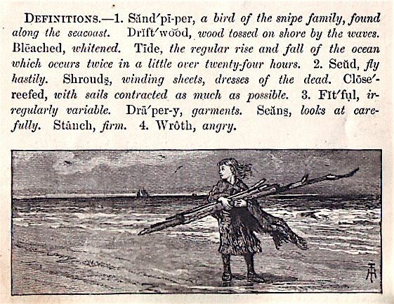

Tuesday, April the 14th, 2009
back to: title, date or indexes
Mr Key would like to draw to your attention a very promising new blog entitled The Pavilion Of Innocent Pastimes. Its onlie begetter is Hooting Yard's Antipodean research boffin Glyn Webster. The latest postage, entitled A page from an O'Houlihan's Wharf primer?, is particularly splendid, and is reproduced below, but do not let that deter you from making many, many visits to the site itself.
